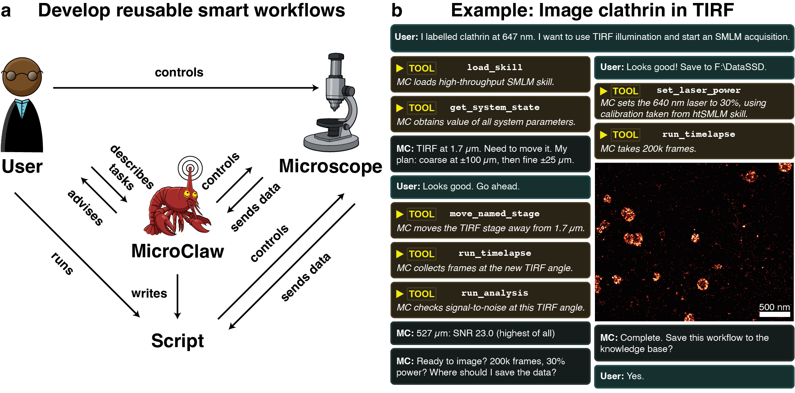

From an imaging request to a reusable workflow: MicroClaw brings a language agent to the microscope

Zach Marin and colleagues at the Max Perutz Labs, the University of Vienna, EPFL and the University of California, San Francisco describe the software in “Microscope control with a natural language agent”. The study applies MicroClaw to super-resolution imaging, sequential imaging with fluidics and image-guided searches for regions of interest across several microscope setups. The paper and its accompanying open-source code address a familiar obstacle in smart microscopy: translating an experimental requirement into an acquisition routine usually takes programming expertise and development time.
A researcher may know that they need to find a flat microtubule network, check whether it contains enough moving kinesins and record a time series, without knowing how to connect those steps in software. MicroClaw takes such requests through a browser conversation. It uses Anthropic’s Claude models to plan actions and calls Python tools that communicate with an already running Micro-Manager instance through Pycro-Manager. The operator can continue using the microscope’s normal interface and sees the changes as they happen.
The software combines written procedures for techniques such as single-molecule localization microscopy and DNA-PAINT with a persistent knowledge base for the particular instrument and its users. When an experiment needs analysis or acquisition logic beyond the supplied tools, the agent can write Python functions called hooks. These run locally and can use acquired images to guide subsequent acquisition steps, including through external analysis software. This allows a workflow to make repeated image-based decisions without asking the language model to interpret every frame.
The demonstrations show how this works at different levels of complexity. MicroClaw optimized illumination geometry for super-resolution imaging of clathrin and DNA origami. In an Exchange-PAINT experiment, it coordinated imaging and a syringe pump, prompting the operator to add washes and fresh imager strands between rounds. For kinesin imaging, it searched for suitable microtubule networks, switched channels and assessed candidate regions before collecting time series. In another experiment, it used a previously trained ilastik model to select mitochondrial regions for subsequent super-resolution acquisition.
A central feature is what remains after the conversation. Supported acquisition workflows can be exported to Python scripts that run through Pycro-Manager without MicroClaw or further model calls. The code preserves the analysis logic needed for supported adaptive workflows, so later runs can respond to new images. Export has limits: steps that cannot be represented are reported explicitly. The result is a route from an interactively developed procedure to inspectable, reusable acquisition code.
The authors also describe the limits of the agent’s view of an instrument. In a troubleshooting example, resolving a duplicated image required the operator to locate and manually remove an optical component that was not connected to Micro-Manager. User-defined hardware bounds and approval checks constrain MicroClaw’s actions, but the authors still recommend supervision. MicroClaw reduces the work needed to build experiment-specific automation while retaining the operator’s role in judging the sample, the instrument and the resulting data.